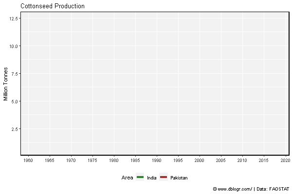
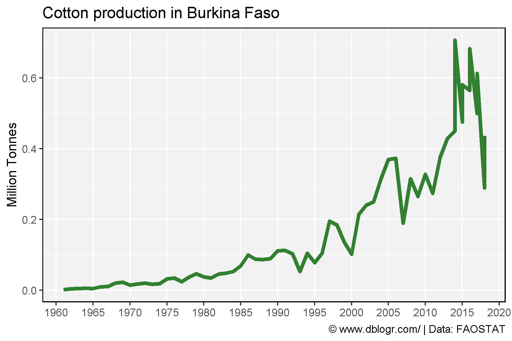

# devtools::install_github("derekmichaelwright/agData")
library(agData) # Loads: tidyverse, ggpubr, ggbeeswarm, ggrepel
library(gganimate)
All Data - PDF
# Prep data
colors <- c("darkgreen", "darkred", "darkgoldenrod2")
areas <- c("World",
levels(agData_FAO_Country_Table$Region),
levels(agData_FAO_Country_Table$SubRegion),
levels(agData_FAO_Country_Table$Country))
xx <- agData_FAO_Crops %>%
filter(Crop == "Cotton") %>%
mutate(Value = ifelse(Measurement %in% c("Area harvested","Production"),
Value / 1000000, Value),
Unit = plyr::mapvalues(Unit, c("hectares","tonnes"),
c("Million hectares","Million tonnes")))
areas <- areas[areas %in% xx$Area]
# Plot
pdf("cotton_fao.pdf", width = 12, height = 4)
for(i in areas) {
print(ggplot(xx %>% filter(Area == i)) +
geom_line(aes(x = Year, y = Value, color = Measurement),
size = 1.5, alpha = 0.8) +
facet_wrap(. ~ Measurement + Unit, ncol = 3, scales = "free_y") +
theme_agData(legend.position = "none", rotx = T) +
scale_color_manual(values = colors) +
scale_x_continuous(breaks = seq(1960, 2020, by = 5) ) +
labs(title = i, y = NULL, x = NULL,
caption = "\xa9 www.dblogr.com/ | Data: FAOSTAT") )
}
dev.off()
## png
## 2
PDF: cotton_fao.pdf
India vs Pakistan
# Prep Data
xx <- agData_FAO_Crops %>%
filter(Crop == "Cottonseed", Area %in% c("India", "Pakistan") )
# Plot Data
mp <- ggplot(xx, aes(x = Year, y = Value / 1000000, color = Area)) +
geom_line(size = 1.5, alpha = 0.8) +
scale_color_manual(values = c("darkgreen", "darkred")) +
scale_x_continuous(breaks = seq(1960, 2020, 5), minor_breaks = NULL) +
theme_agData(legend.position = "bottom") +
labs(title = "Cottonseed Production", y = "Million Tonnes", x = NULL,
caption = "\xa9 www.dblogr.com/ | Data: FAOSTAT")
ggsave("cotton_01.png", mp, width = 6, height = 4)

mp <- mp +
# gganimate
transition_reveal(Year) +
ease_aes('linear')
anim_save("cotton_gifs_01.gif", mp, width = 600, height = 400)

Burkina Faso
# Prep data
x1 <- data.frame(Area = "Burkina Faso", Measurement = "Production",
Year = c(2014,2015,2016,2017, 2018),
Value = c(707000,581000,682940,613000,436000))
xx <- agData_FAO_Crops %>%
filter(Crop == "Cottonseed", Measurement == "Production",
Area == "Burkina Faso") %>% bind_rows(x1)
# Plot
mp <- ggplot(xx, aes(x = Year, y = Value / 1000000)) +
geom_line(color = "darkgreen", size = 1.5, alpha = 0.8) +
scale_x_continuous(breaks = seq(1960, 2020, 5), minor_breaks = NULL) +
theme_agData() +
labs(title = "Cotton production in Burkina Faso", y = "Million Tonnes", x = NULL,
caption = "\xa9 www.dblogr.com/ | Data: FAOSTAT")
ggsave("cotton_02.png", mp, width = 6, height = 4)

© Derek Michael Wright www.dblogr.com/